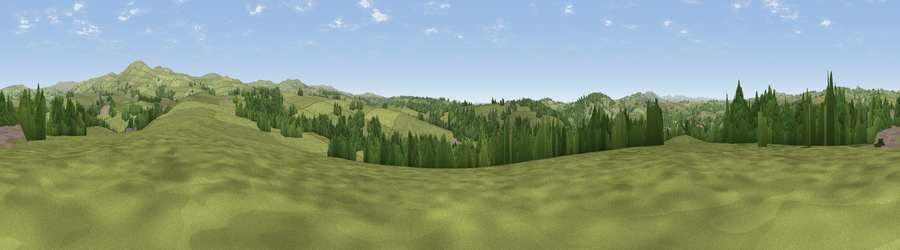

The Pimple
#27244 in England · top 54% of its area beats it · near TavistockThe view, rendered

A 360° render of this exact spot computed from the terrain model, tree cover and land cover — summer colours, afternoon light, calibrated against photographs of famous viewpoints. Real trees, hedges and buildings will differ in detail.
The panorama
Grey silhouette: terrain skyline in each direction (720 bearings, Earth curvature and refraction included). Dashed green: skyline with trees (+15 m) and buildings (+8 m) as obstacles. Blue strip: how far the ground is visible on each bearing.
Where the view opens
Wedge length = distance to the farthest visible ground on that bearing (vegetation-aware). Rings at 10, 25 and 50 km.
What fills the view
71% grassland · 24% woodland · 4% built-up ·
Angular shares of the visible panorama (visual magnitude), not map area. Landscape diversity 0.33 (0–1 Shannon).
Key numbers
More beautiful places nearby
The staircase of upgrades: each row has a higher view potential than everything closer. Driving times are estimates from straight-line distance, calibrated against real road routing — check an actual route before setting out.
| Place | Direction | Drive | Score |
|---|---|---|---|
| Viewpoint near Gunnislake | SW · 4 km | ~8 min | 48.6 |
| Viewpoint near Walkhampton | E · 4 km | ~9 min | 69.0 |
| Pew Tor | E · 4 km | ~9 min | 71.7 |
| Cox Tor | NE · 5 km | ~11 min | 75.9 |
| Viewpoint near Dousland | ESE · 7 km | ~15 min | 81.0 |
| Viewpoint near Lee Moor | SE · 13 km | ~23 min | 82.7 |
| Viewpoint near Downderry | SW · 25 km | ~40 min | 83.5 |
| Viewpoint near Polperro | SW · 38 km | ~56 min | 83.7 |
50.54199, -4.12994 · source: osm viewpoint · position refined by local search. Computed location — check access rights before visiting.